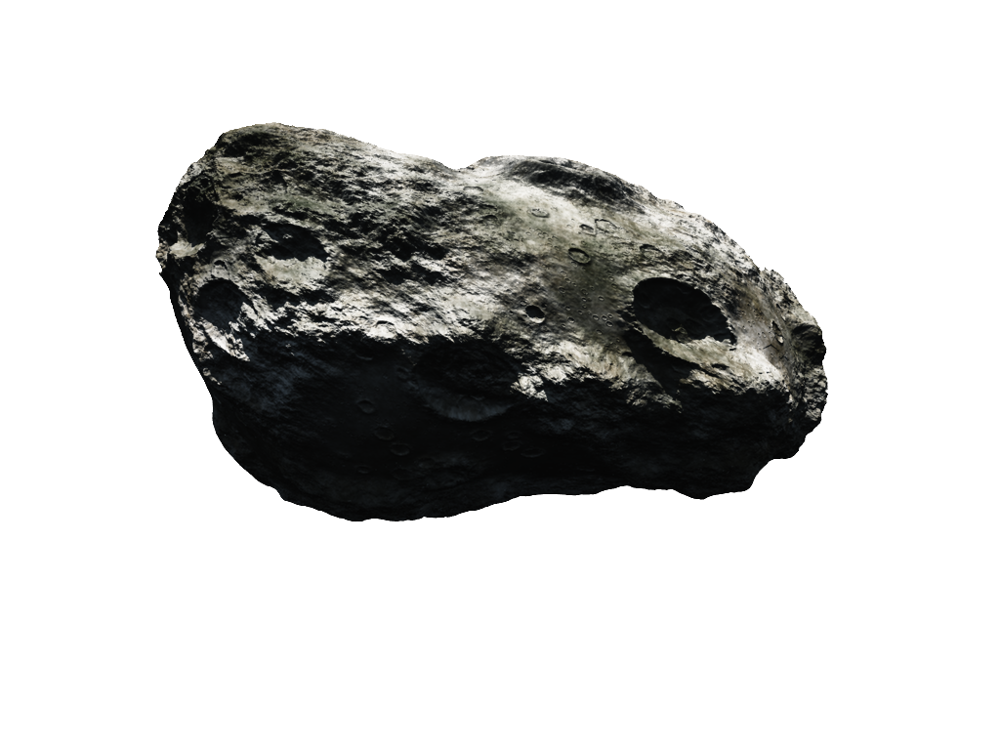
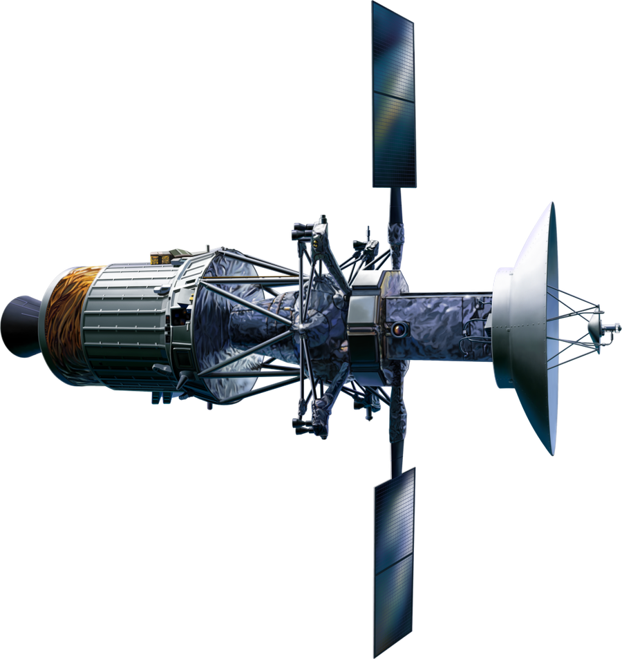

Welcome to Utopia
Explore real infrared data from NASA’s SPHEREx mission and watch the sky change over time.
Enter a position or an object name to begin.

Explore the
universe
universe
Utopia: journey in the sky
Scroll to launch
Did you know?
Our project, in a few surprising facts
0colors of infrared light
0all-sky maps in ~2 years
0images every day
0detectors per exposure

Launched 11 March 2025
- SPHEREx circles Earth over the poles about 14½ times a day.
- It turns to aim with reaction wheels, not thrusters.
- After six months it has seen every direction in the sky.
A spectrum in every pixel
- Light is split into 102 colors from 0.75 to 5 µm.
- Hundreds of millions of galaxies get a 3D position.
- Over 9 million planned looks at Milky Way clouds hunt for water ice.
What Utopia does with it
◎Sky ExplorerFind every image of a position.
◷Time MachineStep through time, spot what changed.
∿Spectral ExplorerBuild a 0.75–5 µm spectrum.
✦DiscoveriesReview moving-object candidates.
Mission facts: NASA/JPL-Caltech SPHEREx.
Data fromNASA SPHEREx